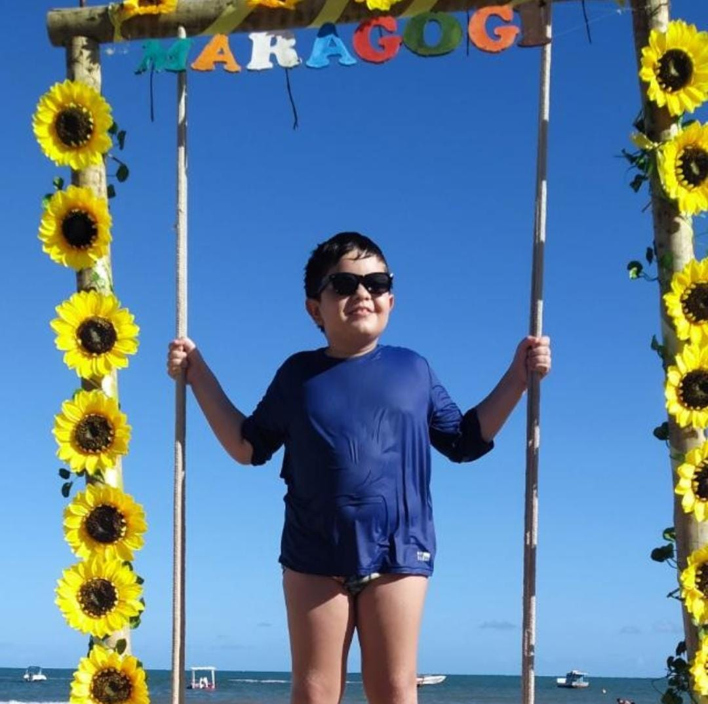
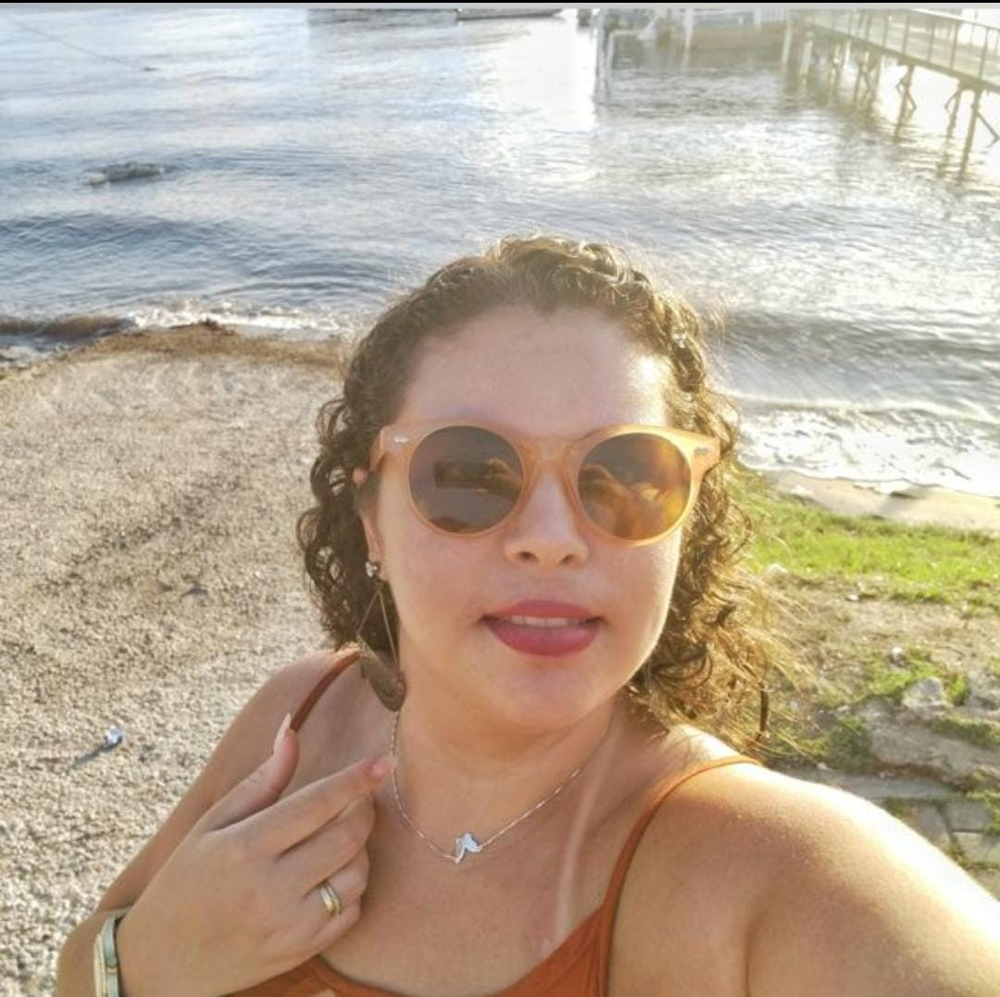

Florrance
Furico
Eleita 3x a mulher mais linda do universo, bodybuilder, policial e dentista

Davi
Furico
Eleito o Furico dos Furicos, com mais de 5 BILHÕES de votos em toda a via láctea. Jogador de Clash Royale amador
Eleita, pelo segundo mandato consecutivo, a presidente da praça das fofoqueiras
Leninha
Furico
Vice-presidente da praça das fofoqueiras e diretora da seção de obtenção de informações fofoquisticas (SOIF)
Adryelle
Furico
Diretora adjunta da seção de obtenção de informações fofoquísticas, sendo responsável
por realizar trabalho de campo na obtenção das informações

Danyelle
Furico
Fofoqueira adjunta, responsável pela edição das fotos do jornal "A fofoca". Mãe de Davi Furico (o Furico dos Furicos) nas horas vagas
Felipe
Furico
Modelo do jornal "A fofoca". Marido de Danyelle Furico e pai de Davi Furico (o Furico dos Furicos).
Maratonista amador nas horas vagas